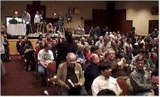
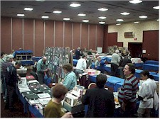
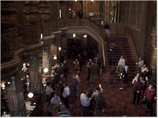
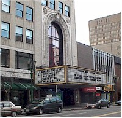

Contents | Features | Reviews | News | Archives | Store

Contents | Features | Reviews | News | Archives | Store
 |
Cinefest 18 by Elias Savada |
I’ve been wrangling with my approach to this final piece documenting the 18th annual Cinefest I attended last weekend in Syracuse, New York. Procrastination is, regrettably, one of my finer points. I did, after all, have tons of spam I had to answer.
So, I’m still absorbing the 20+ films that unspooled and the new faces and old friends that took up one of the 500 to 600 chairs in William K. Everson Memorial Screening Room, a fitting monument for the noted film scholar who for years was a Cinefest regular until his untimely passing. Day One began after six hours of sleep, two cups of coffee (cream, no sugar), then on to the movies. Instead of recounting all the films I managed to stay at least half-awake for, I’ll pass along comments on a few of them, and sprinkle some other ramblings that I hope will keep your eyes open a few minutes longer. (You there...I see you nodding off!)
Attendance was near 1,000 and, considering it does no advertising, the event has grown considerably since its first presentation at the downtown Hotel Syracuse. Now firmly entrenched at the Sheraton Four Points, no long-time attendees regret the move from the Quality Inn and Days Inn down the road a mile or so three years ago. The hotel is always sold out and early bookings – I made mine last December – are mandatory. One first-timer woke Cinefest founder Phil Serling too early Friday morning (and everyone values whatever shut-eye that can be found here). The newbie had trekked up from New York City without reservations and complained that the hotel wouldn’t give him a room. Phil showed no patience (rightfully so) for this laggard’s mental deficiency for not calling ahead. Click went the phone and one presumes the rookie went packing back to the Days Inn.
The initial round of titles turn out to be rooted not in film history, but in television. Behind the Scenes at CBS is a faded color short subject detailing the goings on at that network’s Studio 72 in 1954 as it prepares for a live television of Toast of the Town. A fairly bland commentary doesn’t diminish the glimpses of Ed Sullivan (smiling!), Eartha Kitt, and other stars of the little screen. It’s a small study in organized chaos during the formative years of the electronic medium. Next was The Thirteen Clocks, a wacky fairytale based on a James Thurber piece, which has not been seen since its original broadcast in 1953. This was the first full-length play with music ever done on live television and it featured the musical talents of John Raitt (Bonnie’s father) and opera diva Roberta Peters (no, not the actress popping up in every Mel Brooks’ film), as well as Basil Rathbone and Sir Cedric Hardwicke.
No Orchids for Miss Blandish was a 1948 British subject (later remade as The Grissom Gang by Robert Aldrich in the early 1970s) shown for the first time in this country in its original British release version. It had censor problems 50 years ago and this cynical story of gang intrigue, duplicity, and brutal murders (there is an unusually high body count) set in the New York underworld, never fully made it across the Atlantic. Except to Latin America, as the print has Spanish subtitles added when distributed south of the border. The source author was James Hadley Chase, responsible for the story material used in this year’s Palmetto.
Among some of the usual (for Cinefest) oddity items the first day were Jazz Mad (1928), a rare Universal silent, which survived despite that studio’s mass destruction of nearly all it’s silent product. Jean Hersholt stars as a down-on-his-luck immigrant composer who can’t get his classical symphony produced. He survives by conducting the Goulash Orchestra, a gag jazz band that is so bad the cigarette girls hand out vegetables to throw at them. It’s not very memorable other than for some early shots of the Hollywood Bowl. Also in the obscure category was Heart o’ the Hills, a 1919 feature starring Mary Pickford in a tale about misunderstood Kentucky mountain folk. It’s a weak story about the black side of capitalism shot on location...near Redlands, California. Two Fisted (1935) was a snappy but predictable prizefighting farce featuring Lee Tracy, a dynamic and fast-talking actor (often cast as a reporter) nominated for an Oscar for his last film role in The Best Man (1964). Try to catch some of his films on AMC or TMC – you’ll see why he’s one of my favorites.
There are probably few readers here on Nitrate Online who overlap the Silent Film Newsgroup. You might want to try it out for it’s enlightened chatter any number of pre-talkie topics relating to the gone (but never forgotten) silent movie tradition. Of course, silent films were never meant to be shown that way – and in Syracuse we are blessed with some of the finest accompanists working (er, playing) today: Jon Mirsalis, Phil Carli (of George Eastman House), and Gabriel Thibaudeau (who, unfortunately, missed this year’s fest). Jon and Phil were regularly greeted by wild applause following their performances, this year enhanced by an electronic piano that added wonderful, haunting effects for several presentations, including the screening The Student of Prague. This late 1920s German feature was the second telling of the famous story by Hanns Heinz Ewers that is firmly rooted in the legend of Faust. Conrad Veidt gives a marvelous performance as the titular character who makes a fatal pack with the devil.
Some of cinema’s great comedians were represented (again) with screenings of Frozen Hearts (1923), a Russian-themed farce showcasing Stan Laurel, in his pre-Oliver Hardy days; What Women Did for Me, a 1927 Hal Roach short highlighting Charley Chase as a mild-mannered professor distracted by his female students; So’s Your Old Man (1926), one of the six silent features that starred W.C. Fields, here portraying Sam Bisbee, a suburban nitwit and bumbling inventor – and an outcast in his community – whose rise in the social strata is effected by a chance encounter with Princess Lescaboura (Alice Joyce). Her subsequent visit to Bisbee’s hometown makes him the talk of the town. Director Gregory LaCava, better known for some fine screwball comedies of the 1930s, carried the film along on a merry and frantic pace, aided by some inventive sight gags and imaginative intertitles. Welcome Danger (1929), a restoration project of the UCLA Film and Television Archives, was Harold Lloyd’s first sound feature. Originally conceived as a silent work, Lloyd spent almost a million dollars remaking the film into a talkie. At a long 11 reels (more than 90 minutes), the film has sound sequences mixed with silent scenes with dubbing. It is obviously overweight and Lloyd’s uneasiness with the sound technology shows – but there’s still plenty of action. The shorter, silent version of this film is currently being restored and I suspect it will play much better than the one presented at this year’s Cinefest.
There were a more than a handful of melodramas, including director William Wyler’s first "A" picture (and also his first sound film) The Shakedown (1929) about a professional patsy (James Murray) who befriends an orphan and turns on his shady cohorts for an appropriate happy ending. Over the Hill (1931) was my personal favorite of the weekend. One of the best "mother" roles is filled here by Mae Marsh, back from retirement after a successful career in many memorable D.W. Griffith films. Her performance is Oscar-caliber (she wasn’t nominated!) as a smalltown New York matriarch who tries her best to rein her loafish husband (played by fellow Biograph veteran James Kirkwood) and their four children, both during their formative years and then years later when the nest is empty. Kudos to film historian David Shepard, a former teacher at Syracuse University returning for his first Cinefest, for presenting this obscure classic.
Saturday morning’s 35mm screenings (all hotel shows are 16mm prints) at the 70-year-old Landmark Theatre, the former Loews State Theatre that is being restored to its former glory, a mix of Hindu, Persian and Oriental motifs set amid lush tapestries, the lobby’s Tiffany-sconced Vanderbilt chandelier, and plush seats. Scott MacQueen, preservationist extraordinaire with Disney, returned for a second time to Syracuse to present some treasures from that studio, including a 1924 Alice Wild West comedy (blending live action and animation), a 1930 sing-a-long Minnie’s Yoo Hoo (the original Mickey Mouse Club anthem), Pluto’s Judgement Day (in both pencil-sketch and Technicolor release versions), the studio founder playing a game of baseball with his co-workers, numerous other shorts, and Clair De Lune, a fully restored segment from Fantasia (1940) cut from that classic, but overlong, animated feature. Scott was presenting a good portion of this program, and more, last Saturday at the Smithsonian’s Museum of Natural History Baird Auditorium here in Washington. The reaction was overwhelming for two shows, one over-sold-out.
But meanwhile, back in Syracuse. The "event" screening was the exciting presentation of the 1925 blockbuster The Lost World, which Leonard Maltin calls (in a booklet prepared especially for this occasion by Grace Houghton) "the granddaddy of all prehistoric monster movies. It set the pattern for King Kong, which has provided the blueprint for every similar film since then...including the new Spielberg opus." The heartbreaking tale of the film’s demise as prints and negatives were destroyed through the years were offset by the discovery of a good deal of the missing footage at the Filmovy Archiv in Prague, Czechoslovakia. The print shown here ran about 95 minutes, with the costs for its restoration (over $100,000) being partly funded by film buff and playboy Hugh Hefner). For more information about the efforts to save the film, visit Ed Sumner’s The Dinosaur Interplanetary Gazette home page.
While all this was going on, the adjoining dealer room back the hotel was as busy as ever. Videos, wood-cuts, poster reproductions, original stills, lobbycards, 16mm films, movie projectors were all being peddled. I brought back some lovely repros and woodcuts (original ad artwork glued onto miniature standees and magnets) from several Tod Browning films.
As promised in my first installment, below are some interesting internet websites for those of you who want to explore cinema’s past:
As to other upcoming fests, you might want to check out:
So, as the Orangemen continue their run to the Final Four, my travel travails peaked as my 4-day hectically relaxed stay came to an end. United Express didn’t bother to delay my departure on one of their aircraft from the moderate chill of New York; they cancelled my flight completely. Three hours late I arrived in Washington’s Ronald Reagan National Airport (thank you USAir!). They didn’t show any inflight movies.
Contents | Features | Reviews | News | Archives | Store
Copyright © 1999 by Nitrate Productions, Inc. All Rights Reserved.